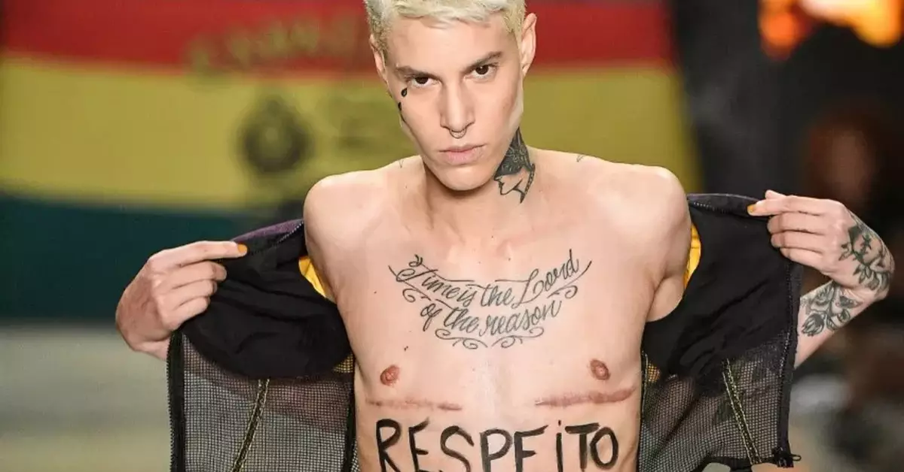
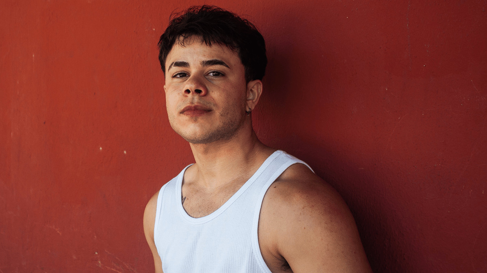
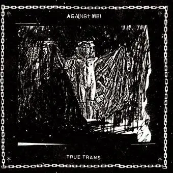

Arte, vidas & expressão
Cultura Trans: olhares que transformam o mundo
Da música à literatura, das artes visuais às artes cênicas — a comunidade trans sempre esteve na vanguarda da criação artística e cultural.
Linn da Quebrada
Cantora, compositora e atriz brasileira, referência em funk e arte transgressora. Criadora do manifesto "Bicharada".
Amara Moira
Doutora em Literatura, escritora e ativista trans. Autora de "E Se Eu Fosse Puta", obra fundamental da literatura trans brasileira.
Indianarae Siqueira
Atriz, ativista e ex-vereadora do Rio de Janeiro. Pioneira na representação política e artística da comunidade trans.
Ventura Profana
Artista multimídia afro-trans nordestina, reconhecida pelo uso da arte como ferramenta de resistência e espiritualidade.
Fefa Lins
Pintor transmasculino e não-binário, retrata, por meo das artes plásticas, as sensações e emoções que representam a comunidade de maneira sutil e, ao mesmo tempo, poderosa.

Sam Porto
Modelo, primeiro homem trans a desfilar na "São Paulo Fashion Week", em 2019, utiliza da moda como meio de protesto e luta a favor de sua comunidade.
Laerte Coutinho
Uma das maiores cartunistas do Brasil, Laerte é trans e usa suas tiras para refletir sobre identidade, humor e existência.

Dante Olivier
Ator, dançarino, é também um influencer que ganhou espaço na mídia por falar de suas vivências e utilizar das redes sociais como apoio para transmasculinos, como ele, e trangênero como um todo.

E Se Eu Fosse Puta
Obra seminal da literatura trans brasileira, que narra experiências de prostituição, identidade e resistência com profundidade literária.
Minha Vida nas Estrelas
Memórias de uma das ativistas trans mais jovens do mundo, relatando sua jornada de vida com leveza e coragem desde a infância.
Redefining Realness
Memoir poderoso da escritora e ativista americana Janet Mock sobre crescer como mulher negra e trans nos EUA.
A Solidão de Ser
Poesia que atravessa a experiência trans periférica com beleza e denúncia, consolidando a autora como voz urgente da literatura brasileira.
Surpassing Certainty
Continuação de "Redefining Realness", explorando os anos de construção de carreira e identidade da autora em Nova York.
Becoming Nicole
A história real de uma menina trans e sua família, que enfrentou a escola, o sistema e transformou a lei americana.
Série "Corpos que Importam"
Série fotográfica e instalação que examina corpos trans negros a partir da espiritualidade afro-brasileira e da resistência ancestral.
Laerte: Tiras e Identidade
Décadas de quadrinhos que narram a descoberta da identidade trans com humor, poesia e crítica social — um arquivo vivo da transição pública.
Por Dentro da Carne
Instalação videográfica que investiga a construção do corpo trans como espaço político e poético, exibida em bienais nacionais.
The Death of Michael Jackson
Fotógrafa e artista visual sul-africana que documenta comunidades queer e trans negras com uma estética marcante de intimidade e poder.
Self-Portraits (série)
Fotógrafo e artista intersexo/trans britânico, pioneiro em registrar corpos fora do binário de gênero com beleza e provocação.
Bicha, Nêga, Sapatão
Exposição coletiva itinerante que reúne pinturas, esculturas e arte digital criadas por artistas trans de diferentes regiões do Brasil.